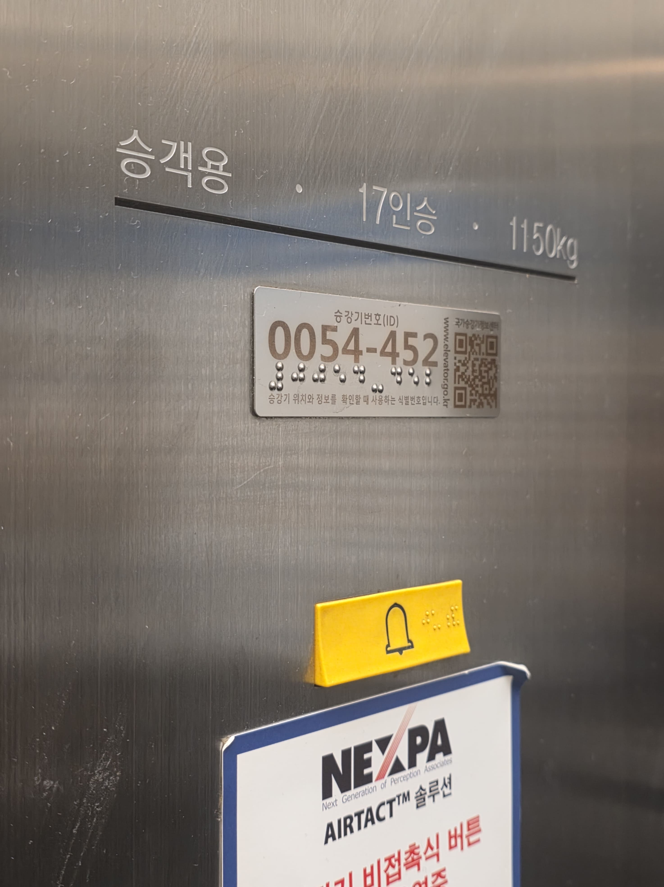

엘리베이터를 타면 왜 모서리로 가고 싶은가?
인간은 본능적으로 타인과의 물리적 거리를 유지하여 심리적 안정감을 확보하려 한다. 엘리베이터는 좁고 폐쇄적인 공간이므로, 낯선 타인과 친밀 거리 내에서 밀접하게 마주해야 하는 상황을 강요한다. 이처럼 개인 공간이 침해될 때 발생하는 불편함과 불안감을 해소하기 위해 탑승자는 물리적으로 가장 먼 거리를 확보할 수 있는 모서리나 벽 쪽으로 이동한다. 이는 잠재적인 위협 상황에 대한 본능적인 반응으로 해석되며, 침팬지나 다른 영장류가 좁은 공간에서 서로 눈을 피하고 구석에 자리 잡는 행동과 유사하다는 연구 결과도 존재한다.
몇 명까지 탑승하면 사람들은 불편한 밀도를 느끼는가?
인간은 일반적으로 타인과 1m 이내의 거리가 유지될 때 불편함과 불안감을 느낀다. 엘리베이터는 좁은 공간이므로, 탑승 인원이 증가하여 이 거리가 침해될 때 불편한 밀도를 인식하게 된다. 이 지점은 일반적으로 타인과의 신체 접촉을 피하기 위해 노력해야 하는 밀도로 정의된다. 또한 사회적 행동 규범에 대한 연구에 따르면, 엘리베이터 크기가 일반적인 경우, 탑승 인원이 4명을 넘어설 때부터 개인 공간 확보가 어려워지며 심리적 불편함이 시작된다. 인원 수에 따른 상황을 자세히 살펴보자면 1~2명은 가장 먼 거리를 두고 대각선 모서리에 위치하여 개인 공간을 충분히 확보한다. 3~4명은 각 모서리를 차지하여 최대한의 거리를 확보하려 한다. 5명 이상부터는 모서리를 넘어 중앙 공간을 침범하게 되며, 타인과의 접촉이 불가피해지고 시선 회피 등의 방어적 행동이 증가하는 불편한 밀도 상태로 진입한다. 중앙에 위치하게 되는 탑승자는 가장 높은 스트레스를 경험할 가능성이 있다.